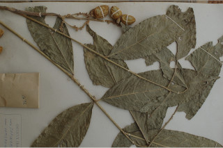
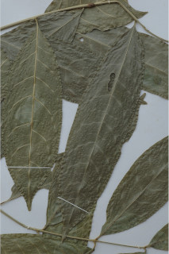
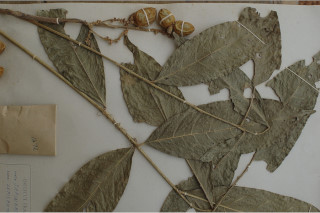
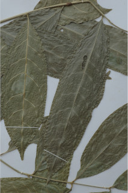

Images :

 





| Habit : | Large shrubs to small trees up to 5 m tall. |
| Leaves : | Leaves compound , paripinnate , alternate , spiral , to 60 cm long; rachis pulvinate , obscurely striate , pubescent when young; petiolule 0.5-1 cm, canaliculate , glabrous ; leaflets 4-6 pairs, opposite-subopposite or alternate , 12-21 x 3.5-6 cm, narrow elliptic to elliptic-oblong , apex acuminate , base acute to attenuate , margin entire , chartaceous , glabrous ; midrib raised above; secondary_nerves 8-10 pairs, gradually curved and ascending; tertiary_nerves broadly reticulate . |
| Inflorescence / Flower : | N/A |
| Fruit and Seed : | N/A |